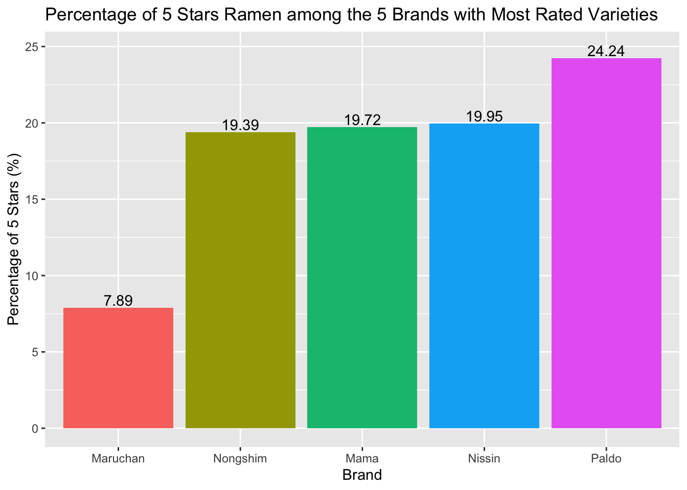

Rating by Brands
Background Introduction
In this Ramen dataset, there are 355 brands.
Brands with more than 30 varieties
Here are brands which have more than 30 varieties!
As shown in the above plot, Nissin has the widest variety with 381 types of flavor among all of the brands in this dataset.
The 5 most common brands are:


Below are the distribution plots of stars for these 5 most common brands

The above plots show that all these 5 brands have a peak at around 4 star. For Nissin, Nongshim, Mama, and Paldo, they also have a second peak at around 5 star.
Brands with only 1 flavor
In this dataset, there are 120 brands which only have one flavor.
Below is the histogram plot of stars for these brands with only 1 flavor.

As shown in the histogram plot, most of brands have higher or equal to 3 star.
Compared to the following histogram plot for all the brands in the dataset, the stars of least common brands distribute more evenly, while the average stars of all the brands have an apparent peak at 4 star.